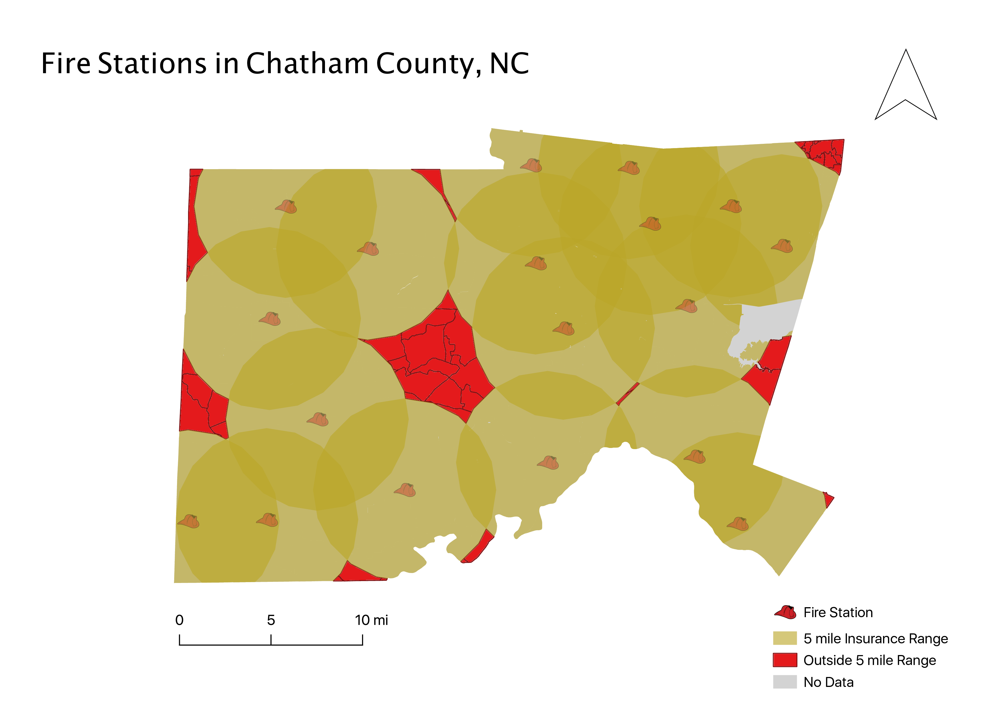

Homework 10: Vector Spatial Analysis
Hanson Powell
This map shows the distribution of fire stations in Chatham County as well as a buffer region of five miles around them. The significance of the five mile radius is that this distance represents the maximum distance a home can be from a fire station and still recieve a lowered fire insurance rating. Any home built further than 5 miles from a fire station will aoutomatically recieve the highest rating for fire insurance and be forced to pay higher rates. Homes built within 5 miles of several fire stations should recieve an additionally reduced rate, but rates also depend on other factors such as how many firehydrants are in the area. The question I sought to answer with this map was "Where are the best areas to build homes in order to minimize the cost of fire insurance?" When I started making the map, there was some points outside of chatham county so I had to clip them so that they were contained only to Chatham County. I then created the buffer region around the fire stations, and then clipped them so that they were also contained in the county. Finally, I created a feature class for the areas that were not inside the buffer regioins by using the difference geoprocessing technique.

Data Used/Created for This Project
Chatham County Boundary data
Clipped Buffers GeoJSON
Clipped Fire stations GeoJSON
Outside buffer region Difference GeoJSON
Link to Shapefile